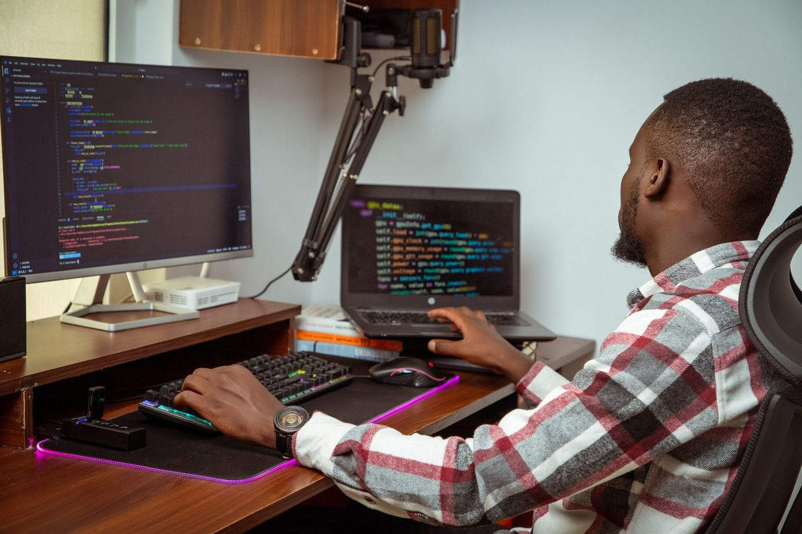
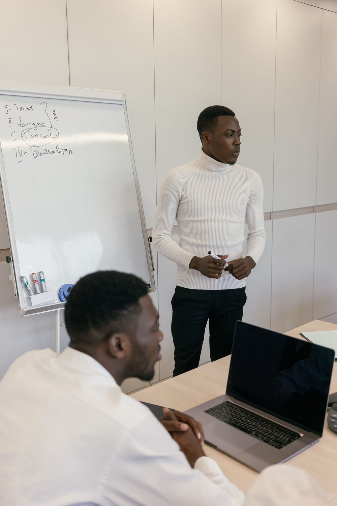

Software engineering and beyond
The team behind the systems institutions run on — engineers who take reliability seriously.
Get in Touch- 01PlanUnderstanding the data before writing code.

02BuildThe right tools for the job.
03ReviewTesting the design against real constraints.- 04SupportStaying after launch to keep it running.
Trusted by

Our mission
Inotribe brings together engineers who build the systems institutions can't afford to get wrong.
Why Inotribe
We take your systems as seriously as you do.
Every engagement is treated like the systems we build — meant to last, not to just ship.
Contact UsInstitutional-Grade Reliability
Systems designed to keep running when the institution depends on them.
Data-First Engineering
We start from the data and how it is used, then design the software around it.
Cross-Sector Experience
Finance, government and enterprise: we know how each one works and what it needs.
Direct Access to Engineers
You talk to the people building your system, not a layer of account managers.
How we work
Process that moves things forward
- 01
Discover
Understanding the data and operational reality before writing code.
- 02
Design
Architecting a solution built to hold up at scale.
- 03
Research
Testing the design against real data, standards and constraints before the build.
- 04
Build
Engineering the system with the right tools for the job.
- 05
Deliver & Support
Shipping, then staying to make sure it holds up in production.
Testimonials
Don't Just Take Our Word For It
Loading testimonials…
One Engineering Partner For Every System
From data infrastructure to identity verification — handled end to end.
Engineered for Scale
Built to compute and deliver across millions of records, on a schedule or on demand.
Senior Engineers
Experienced engineers lead every engagement, from the first conversation to production support.
Proven Track Record
Shipped for finance, government and enterprise.
 Finance
Finance Government
Government Enterprise
Enterprise

Let's build something that lasts.
Tell us about the system you need built, migrated or made reliable.
Get in Touch